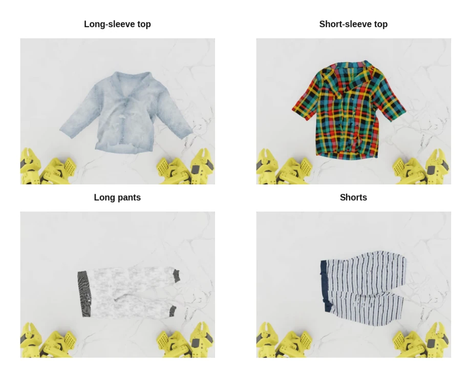
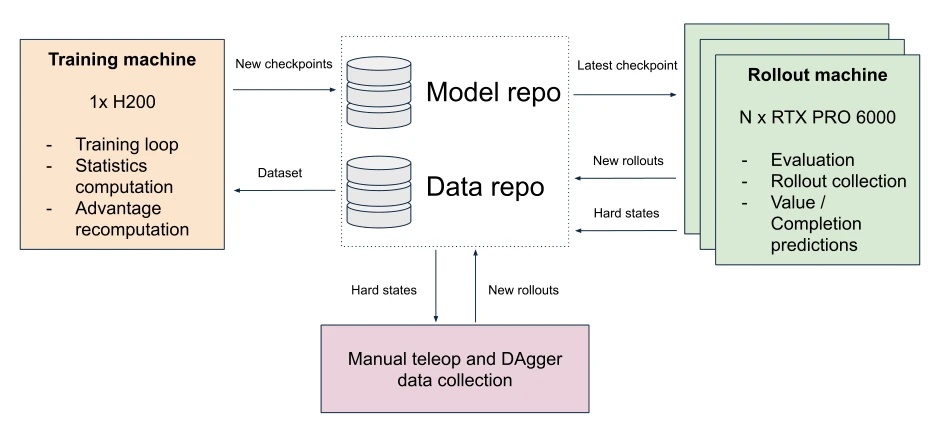
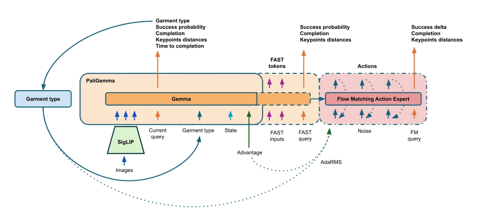
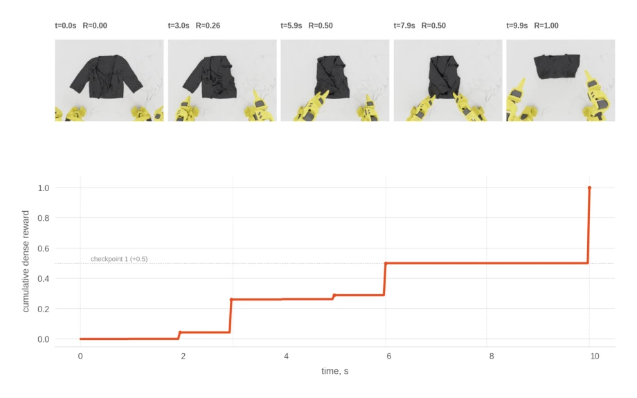
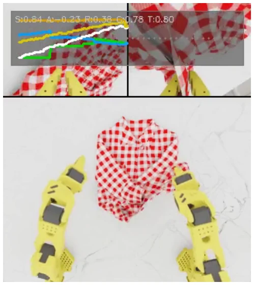
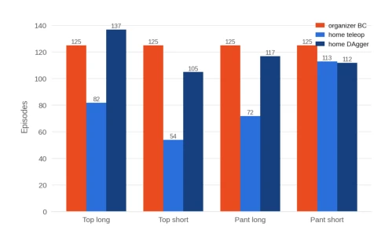
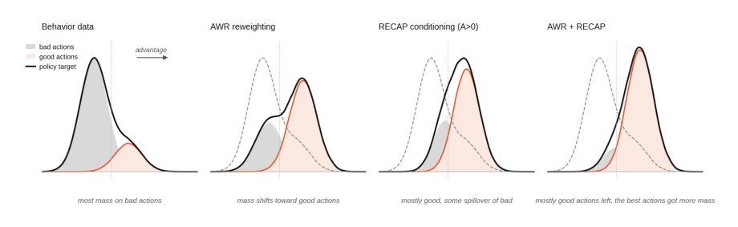
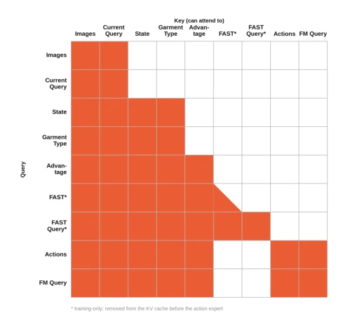
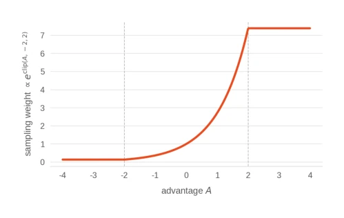
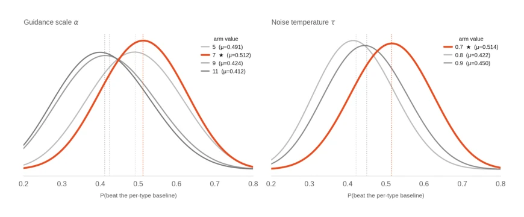

This paper is more of a textbook on "competition engineering" than a research breakthrough. Author Ilia Larchenko used a combination of moves to secure 1st place online and 2nd place offline in LeHome Challenge 2026, but frankly, this resembles more of a "parameter tuning diary" of a senior engineer rather than a rigorous academic contribution. The highlight lies in using VLA as a value function, saving the trouble of training a Critic separately, and employing a mixed RL strategy of AWR+RECAP. The drawbacks are also obvious: the authors admit this is an "engineering case study," lacking controlled variable ablation, many techniques (such as XSA, AdaRMS) seem more like "fashion items" piled up to win the competition. However, managing to handle unseen garments without official training data, the Sim-to-Real robustness is indeed commendable, at least stronger than those "paper tigers" that only score points in simulation.
Clothing folding is a typical challenge in deformable-object manipulation, because fabric states are extremely sensitive to trajectories, simple behavior cloning (BC) tends to fail when expert data is clean but lacks robustness [1]. Existing VLA methods lack generalization capability on unseen garments, and task rewards are sparse (binary success), making RL training difficult. LeHome Challenge 2026 set up two rounds: online simulation and offline real machine, and garment types were not disclosed during evaluation, posing extremely high requirements for the policy's self-reasoning and generalization. The authors point out that mainstream PPO-like algorithms are not suitable for flow-matching VLA, and the effective action manifold is narrow, requiring a more refined Advantage utilization method. Additionally, the evaluation robot is inaccessible during real machine evaluation, forcing Sim-to-Real transfer to include additional generalization steps.

Figure 1: The four garment types, seen from the overhead camera in the original simulation behavior-cloning dataset released by the organizers.
Overall adopts an asynchronous flywheel architecture (Figure 2), connecting the Training, Rollout, and DAgger three components via HuggingFace Hub. The policy is based on the π0.5 [8] architecture, using SigLIP to encode images, Gemma series as the Transformer backbone, and Flow Matching to generate actions. The core innovation lies in "Policy as Value Function": while a single network outputs actions, it predicts success probability and task progress through auxiliary heads (Success, Completion, Keypoint distances), directly driving Advantage estimation. RL training combines AWR [5] (resampling high Advantage frames) and RECAP [6] (Advantage as conditional input), avoiding PPO adaptation issues on flow-matching models. Reward design densifies the binary success signal, building intermediate Checkpoints based on keypoint pair distances, withdrawing rewards upon failure to maintain binary nature. During inference, hyperparameters are optimized via Thompson sampling, and strong data augmentation and DAgger correction are used in the Sim-to-Real phase.

Figure 2: System overview: the asynchronous training / rollout / DAgger flywheel. The three components share state only through the HuggingFace Hub.

Figure 5: Policy architecture. A frozen SigLIP encoder feeds the Gemma-2B prefix (images, current query, state, garment type, advantage, FAST tokens, FAST query); the Gemma-300M flow-matching action expert reads the cleaned prefix and emits a 30-step action chunk. The prediction heads (orange) read from the prefix; the FM query at the tail of the action expert carries the action-conditional future predictions.

Figure 7: Dense reward on a successful long-sleeve-top episode: overhead frames at five milestones (top) and the cumulative reward (bottom). The first 0.5 is allocated gradually as the primary proximity distance closes — the gradual first checkpoint — and reaching full success brings the total to 1.0.
In LeHome Challenge 2026, the system achieved 1st place out of 62 teams in online simulation, with a success rate of 79.63%, leading the 2nd place by 6.1 points. The offline ICRA real machine final achieved 2nd place. The dataset includes BC data provided by organizers, simulation Rollout data, and DAgger manual correction data. The authors did not conduct strict ablation experiments, mainly relying on iterative optimization. Key findings include: the AWR+RECAP combination is more effective than using them separately; strong augmentation (such as texture, lighting) in the Sim-to-Real phase is crucial for transfer; the garment type predicted by the policy itself achieves over 99% accuracy during inference. Although lacking controlled variables, the engineering robustness validates the effectiveness of the solution.

Figure 4: A mid-episode frame from a rollout debug video. The three camera views combined. The overlay shows the per-frame success probability (S), advantage (A), reward (R), completion (C), and time-to-completion (T), with their traces over the episode.

Figure 10: Real-robot episodes per garment type, split by source (organizer BC, home teleop, home DAgger).
其他图片Other Figures

Figure 3: AWR + RECAP toy illustration.

Figure 6: Attention mask.

Figure 8: AWR sampling weight as a function of advantage, P ∝ eclip(A,−2,2).

Figure 9: Thompson-sampling posteriors for short pants.